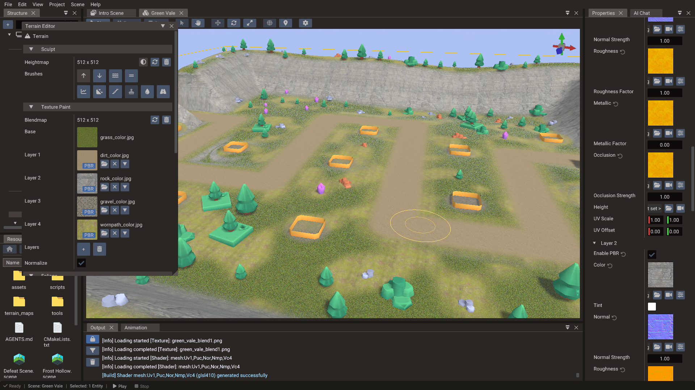
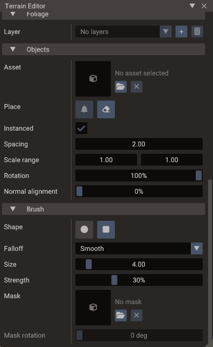

Terrain Editor¶
The Terrain Editor is the authoring window for entities with a Terrain component. It paints the terrain's maps — heightmap, blend maps, and foliage density maps — and places props on the surface, all with the same brush.

Opening the window¶
Select the terrain entity and click Open Terrain Editor in the Properties window, or choose View → Terrain Editor. The window can also stay open while you work: it follows the selection, and shows a hint instead of the tools when the selected entity is not a terrain or a scene is playing.
Terrain editing is disabled during play mode.
Maps¶
Every brush writes into a texture, and each map section has the same row:
| Control | Action |
|---|---|
| Thumbnail / size | The current map and its pixel size |
| Resolution field | Size used when a new map is created |
| Create | Creates the map at the chosen resolution and assigns it to the terrain |
| Recreate | Replaces the map with a fresh one at its current resolution |
| Remove | Clears the map from the terrain |
| Start at middle height (heightmap only) | New heightmaps start at half height so the first stroke can lower as well as raise |
Painted maps are written as PNG files under terrain_maps/ inside the project's assets
directory, so they are referenced, exported, and version-controlled like any other
texture. Heightmaps are stored 16-bit to keep gentle slopes free of terracing.
Files are written in the background while you paint, and every scene save flushes the pending writes and deletes the maps no scene, bundle, or material still references. If a write fails the editor says so and keeps the scene marked unsaved, so the next save retries it.
Sculpt¶
Sculpt brushes write the heightmap. They need a heightmap to exist first — the buttons stay disabled until one is created.
| Brush | Effect |
|---|---|
| Raise | Pushes the surface up (Ctrl lowers, Shift smooths) |
| Lower | Pulls the surface down (Ctrl raises, Shift smooths) |
| Smooth | Averages each texel with its neighbours |
| Flatten | Levels toward a target height (Shift smooths) |
| Sharpen | The smooth kernel pushed the other way — pulls ridges back out of an over-smoothed surface |
| Noise | Adds fractal value noise to break up flat ground |
| Terrace | Snaps heights to evenly spaced flat levels |
| Stamp | Stamps the brush mask into the surface as relief (needs a brush mask) |
| Erode | Hydraulic droplets cut channels and drop sediment; thermal talus settles slopes steeper than the angle of repose |
| Ramp | Drag from one point to another to lay a ramp between the heights the stroke started and ended at |
Flatten takes its target from Sample height (picked from the terrain where each stroke begins) or from an explicit Flatten height. Noise exposes a Noise size — the width of one noise feature in world units, anchored to the terrain so the field stays put as the brush moves. Terrace exposes Terrace steps, the number of flat levels the height range is cut into.
Texture Paint¶
The terrain's ground is a base texture plus up to nine detail layers. Layers are grouped in threes: each group is weighted by the RGB channels of one blend map, and the Blendmap row above the list creates the map for the group the selected layer belongs to.

| Row | Meaning |
|---|---|
| Base | The material's base color texture. Painting it clears the blend map the selected layer sits on, letting the base show through |
| Layer 1…9 | A painted surface. Click the thumbnail to paint that layer; use the folder/clear buttons or drop an image from the Resources Browser to assign its color |
| ▾ (per layer) | Opens that layer's settings under the row |
| Layers | Add or remove the last layer, up to nine (three per blend map) |
| Normalize | Fades the other layers sharing the same blend map as you paint. Layers on other blend maps keep their weight |
Painting is a blend-map write, so the layer textures themselves are never modified.
See Detail layers for how the layers are blended at runtime.
Layer settings¶
The arrow beside a layer's clear button opens its settings under the row. A layer with Enable PBR off shows only what it can use — the rest appears once it is on, and the layer's preview is marked PBR in the list.
| Setting | Meaning |
|---|---|
| Enable PBR | Off blends only the layer's color and leaves the rest to the terrain material. On gives the layer its own surface |
| Copy from material | Fills the layer from a .material file. Dropping one on the layer does the same |
| Tint | Multiplies the layer color |
| Normal + Normal Strength | Tangent-space normal map and how far it tilts the surface |
| Roughness + Roughness Factor | Map read from green (or the only channel of a grayscale map), multiplied by the factor |
| Metallic + Metallic Factor | Map read from blue, same fallback and multiply |
| Occlusion + Occlusion Strength | Map read from red, and how far it darkens ambient light |
| Height | Biases the blend toward this layer where it is taller — it never moves geometry |
| UV Scale / UV Offset | Tiling for this layer alone, multiplying the shared detail tiling |
Copying a material takes its base color and tint, normal, metallic/roughness, occlusion and factors, and turns the layer into a PBR one. Emission and transparency are not part of a terrain layer and are left out; the layer keeps the tiling it already had.
Slope and height mask¶
While a paint brush is selected the Brush section grows a Mask toggle that restricts painting to a range of ground slope (degrees) and height (normalized against the terrain's max height). Texels outside the range keep what they had — the way to paint "rock only above 40 degrees" without tracing the cliffs by hand.
Foliage¶
A foliage layer scatters a mesh over the terrain from a painted density map. Instances are resolved from that map at runtime rather than stored in the scene, so a dense field costs a density map and a set of parameters.
Add a layer, pick its mesh (a model file), create its Density map, then paint with Paint density (Ctrl erases) or Erase density (Ctrl paints).
| Setting | Meaning |
|---|---|
| Density | Instances per square world unit where the map is fully painted |
| Scale range | Minimum and maximum random scale per instance |
| Slope range | Allowed ground slope in degrees, 0 (flat) to 90 (vertical) |
| Height range | Allowed ground height, 0 (terrain base) to 1 (max height) |
| Rotation | Random yaw as a share of a full turn |
| Normal alignment | Blends from upright (0%) to lying along the surface normal (100%) |
| Draw distance | Visibility distance in world units; instances fade in over the last quarter of it |
| Min distance | Instances nearer than this are skipped. A copy of the layer with a simpler mesh, a min distance near this layer's draw distance and a longer draw distance becomes its far detail level |
| Cast shadows | Put this layer into the shadow cascades. Turn off for grass-scale scatter so it still draws in the colour pass without the extra shadow geometry |
| Seed | Change it to reshuffle instance positions |
Foliage entities are created by the engine, not authored: they never appear in the Structure panel, and clicking one in the viewport selects its terrain.
Draw distance while editing
While the Terrain Editor is open on a terrain, that terrain's foliage is scattered over its whole surface so you can see what you painted. Draw distance and Min distance apply again when the window closes, the selection changes, or play mode starts.
Objects¶
The Objects section places real props — models or entity bundles — along the drag, as children of the terrain entity.

| Setting | Meaning |
|---|---|
| Asset | The model or .bundle to place; browse or drop one from the Resources Browser |
| Instanced | Batches every object of this asset into a single instanced draw. Off is one entity per object |
| Spacing | Closest two placed objects are allowed to get, in world units |
| Scale range | Random scale per object; left at 1 a model keeps the scale its file authored |
| Rotation | Random yaw as a share of a full turn |
| Normal alignment | Upright (0%) to aligned with the terrain normal (100%) |
Place objects scatters within the brush radius (Ctrl erases); Erase objects removes the terrain's child props under the brush (Ctrl places). Only meshes and bundle roots count as props — a light or a camera parented to the terrain is neither erased nor counted for spacing.
Instanced placement keeps one host entity per asset under the terrain and adds an instance per object. Instances can be moved, but carry no components of their own, so turn Instanced off for props that need collision, scripts, or animation. Bundles are hierarchies of entities and are always placed un-instanced.
A whole drag is one undo step, whichever mode it used.
Brush settings¶
| Setting | Meaning |
|---|---|
| Shape | Circle or square |
| Falloff | Smooth, Linear, or Constant — how strength fades from the center to the edge |
| Size | Brush radius in world units; for placement, how far objects scatter from the cursor |
| Strength | Flow per second while the button is held (not applicable to placement) |
| Mask | A grayscale image that multiplies the falloff — and the relief the Stamp brush lays down |
| Mask rotation | Turns the mask under the brush |
Because strength is a flow rate, holding the brush in place keeps building up the effect, and stroke speed does not change how much a slow frame applies.
Brush settings, the selected brush, map resolutions and the placement palette are stored per project, so they come back the way you left them.
Shortcuts¶
| Shortcut | Action |
|---|---|
| [ / ] | Shrink / grow the brush |
| Shift+[ / Shift+] | Lower / raise brush strength |
| Ctrl (held) | Inverts the brush: raise↔lower, paint↔erase density, place↔erase objects |
| Shift (held) | Smooths, for the height brushes that support it |
Undo¶
Each stroke is one undo entry. Map strokes record only the rectangle of texels they changed rather than a copy of the whole map, so a long sculpting session stays cheap to undo.
See also¶
- Terrain — terrain concepts, LOD tuning, and the runtime API
- Terrain class reference
- Properties & Components — the Terrain component rows